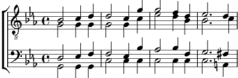

Inspiration
Do mineur
Paroles: Propertius
Musique: Nicolaï Schlupp

Quaeritis, unde mihi totiens scribantur amores,
unde meus ueniat mollis in ora liber?
non haec Calliope, non haec mihi cantat Apollo:
ingenium nobis ipsa puella facit.